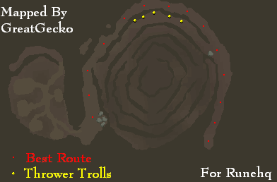
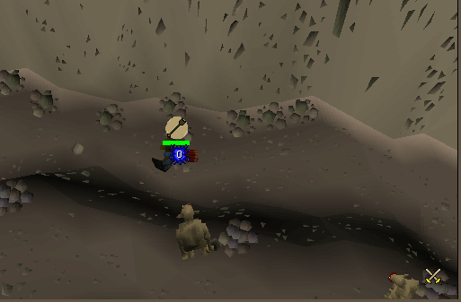
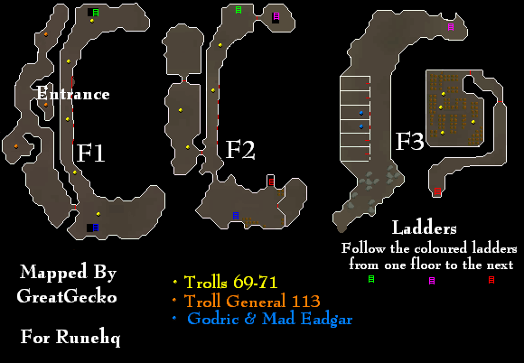
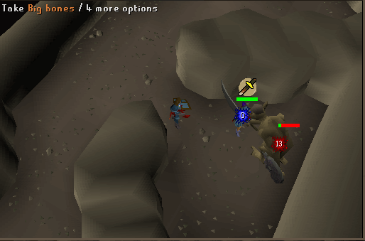
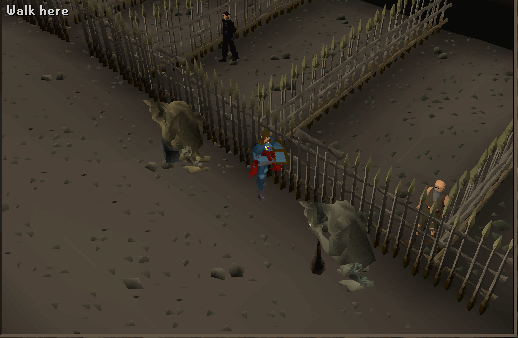
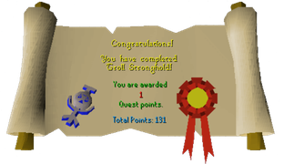

Troll Stronghold
Description: The Imperial Guards have had struggle with the troll army, The trolls have taken Hostages, Godric and Mad Eadgar, find your way into the stronghold and save them.Difficulty: Novice
Length: Medium
Items & Skills Needed:
- Able to hold your own against trolls (can have a max hit of 42), Protect from Missiles if you wish to fight the trolls
Recommended:
- Prayer 43+ is helpful, Prayer potion, good armour/weapon
Reward: 1 Quest point, a Law Talisman, and once you have freed the captured man you can trade him logs for stews up on the hill
Instructions:
Speak to Denulth of Burthrope he will tell you about the backfire of thier planned raid.
Ask him if theres anything you can do to help, he will tell you of a captured soldier, Godric. Tell him you'll go up to the Troll Stronghold to save Godric.
Ask him if theres anything you can do to help, he will tell you of a captured soldier, Godric. Tell him you'll go up to the Troll Stronghold to save Godric.
Grab your Climbing boots, or 12 gp if you lost them, head to the secret pass up the mountain from the last quest,
Death Plateau, Speak to Tenzing if you lost your boots, continue up the path once you have them.
Death Plateau, Speak to Tenzing if you lost your boots, continue up the path once you have them.
A way up the path will fork off, climb over the rocks and head east, go inside the Arena Gate and speak to "Dad" he will tell you need to fight him to continue on, accept his challenge.
Turn on protect from melee, and fight him, use your best attacks on him up until you kill him, he will hit you hard if you don't have protect from melee on.
He smashes you and you'll go flying into a wall nearby, he hits you from 7-11 and from flying into the wall he hits you 15-25.
There is a couple safe places to use range or magic, one is near the gate, although it doesn't always work.
He smashes you and you'll go flying into a wall nearby, he hits you from 7-11 and from flying into the wall he hits you 15-25.
There is a couple safe places to use range or magic, one is near the gate, although it doesn't always work.
Once he's nearly dead he will forfeit. I highly recommend you go back and charge your prayer points, or use a prayer potion.
Just make sure you have full prayer.
Just make sure you have full prayer.
After defeating dad, (and you have full prayer) continue out the exit, and scurry into a cave, nothing much in here, three mountain trolls level 71, go by, don't waste your hit points.
Leave the cave.
Leave the cave.
Now you be in a huge thing that looks like a spiral on the outside.
Stay on the outer part of the spiral, don't get curious and go up it.
Once you go so far, you will see a group of thrower trolls, turn protect from missiles on and run by.
Stay on the outer part of the spiral, don't get curious and go up it.
Once you go so far, you will see a group of thrower trolls, turn protect from missiles on and run by.


Enter the next area, it looks like a troll market place.
Run all the way north and go inside the stronghold.
Run all the way north and go inside the stronghold.
Go all the way South and once you see a wooden door walk inside and prepare for a major fight... kill one of the troll generals.

Before you go in, turn on protect from melee, then charge in, if you don't turn protect from melee on, you will be hit.... hard....it hit me with a 44,
I saw the troll kill a level 120 player in three hits.(he wasn't using prayer) This is when prayer potions come in handy.
Outside of the area each general is in, there is a safe spot to range or mage, just stay out of the inner part (its out of their wander zone)
I saw the troll kill a level 120 player in three hits.(he wasn't using prayer) This is when prayer potions come in handy.
Outside of the area each general is in, there is a safe spot to range or mage, just stay out of the inner part (its out of their wander zone)

Once you have killed it quickly grab a key that he drops, (hurry one second spawn rate)
Go back through the wooden door and go all the way north and go down a stone staircase.
You will see a cell door, with a stone staircase inside, unlock the door and go down now your in a big blank seeming room pickpocket or kill the two trolls, berry and twig, or kill them, pick up the cell keys, and unlock both cells.
Follow Godric and Mad Eadgar outside.
You will see a cell door, with a stone staircase inside, unlock the door and go down now your in a big blank seeming room pickpocket or kill the two trolls, berry and twig, or kill them, pick up the cell keys, and unlock both cells.
Follow Godric and Mad Eadgar outside.

You will appear at a secret entrance, which you can re-enter for reasons of your own.
Follow the path east then south, you'll know where you are, head back to Burthrope and go to smithy, and speak to Dunstan for your reward.
Follow the path east then south, you'll know where you are, head back to Burthrope and go to smithy, and speak to Dunstan for your reward.
Congratulations, Quest Complete!

This quest guide was written by greatgecko,mhoi, and DRAVAN. Thanks to Penneepster for corrections.
This quest guide was entered into the database on Tue, Aug 31, 2004, at 10:20:22 PM by DRAVAN and was last updated on Mon, Dec 06, 2004, at 10:18:36 PM by MrStormy.